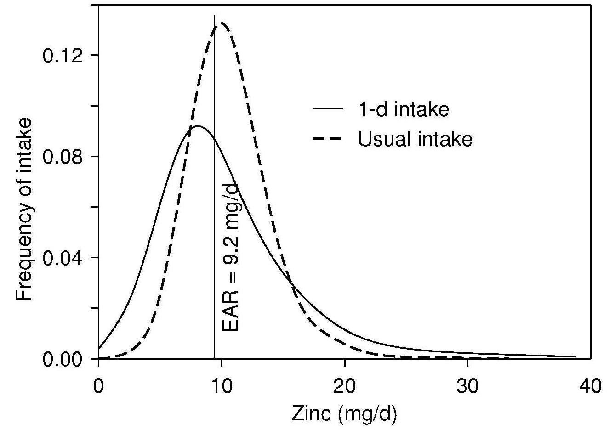

Figure 3.6 Estimates of usual intake distribution for zinc for New
Zealand adults obtained from 24-hout recall data and
adjusted with replicate intake data using the refined NRC
method. The y-axis (frequency of intake) shows the
likelihood of each level of intake in the population. EAR,
Estimated Average Requirement. Modified from (Gibson et al., 2003).
Nutrition today, 38(2), 63–70